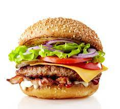
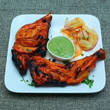

Pizza
Pizza is a dish of Italian origin consisting of a usually round, flat base of leavened wheat-based dough topped with tomatoes, cheese, and often various other ingredients.

Burger
burger is a food consisting of fillings usually a patty of ground meat, typically beef placed inside a sliced bun or bread roll.

Chicken Biriyani
Biryani is a mixed rice dish originating among the Muslims of the Indian subcontinent. It is made with Indian spices, rice, and usually some type of meat.

Al Faham
Al Faham is basically the Arabian barbecued chicken usually grilled over coal or in oven. Although this dish originated in the Middle East, it is now more popular in India.